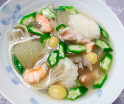

鶏肉と冬瓜のとろみスープ
- 調理時間： 40分
- （一人当たり）
- カロリー：207kcal
- たんぱく質：20.5g
- 脂質：2.6g
- 炭水化物：24.0g
- 塩分：1.8g


＜2人分＞
- 鶏肉
- 80g
- エビ
(茹でて殻をむいておく） - 80g
- 冬瓜
- 80g
- ・レンコン
- 80g
- ・山芋
- 50g
- ・片栗粉
- 小さじ1
(同量の水) - ぎんなん（ゆで）
- 6粒
- オクラ
- 1本
- まいたけ
（手で割いておく） - 40g
作り方②で使用
- ・だし汁
- 400ml
- ・みりん
- 大さじ1
- ・薄口醤油
- 大さじ1
- ・塩
- 少々
- 片栗粉
- 小さじ1
(同量の水) - 生姜汁
- 1片
- わさび
- 少々
A


- 冬瓜は皮をむいて下茹でする。
オクラはサッとゆでて小口切りにする。 - 皮をむいたレンコンと山芋をそれぞれすりおろし、合わせる。
つなぎに片栗粉を加えて混ぜ合わせる。 - 鶏肉は一口大に切り、片栗粉をまぶす。
- 鍋にだし汁とAの調味料を入れ、火にかけ、ひと煮立ちしたら鶏肉を入れる。
②をスプーンですくって入れ、レンコン団子を作る。
冬瓜、エビ、ぎんなん、マイタケを加えてさらに煮る。 - 材料がやわらかく煮えたら、水溶き片栗粉を加えてとろみをつけ、オクラと生姜汁を加えて火を止める。
器に盛り付け、ワサビを添えていただく。
鶏肉と冬瓜のとろみスープ
秋の彼岸も過ぎ、やっと連日の猛暑日からひと段落。とはいえ、夏の疲労がドッと出てくる季節の変わり目。消化のよい食べもので鋭気を養いましょう。
山芋やレンコン、オクラには消化を助ける酵素が含まれます。鶏肉も肉類の中では柔らかく、胃腸に負担をかけません。夏の間は加熱調理が鬱陶しかったりですが、秋野菜の出回りと共に調理方法もシフトしましょう。加熱して食材を柔らかくすると消化を助けるのはご存知の通り。秋の食養生を始めませんか。